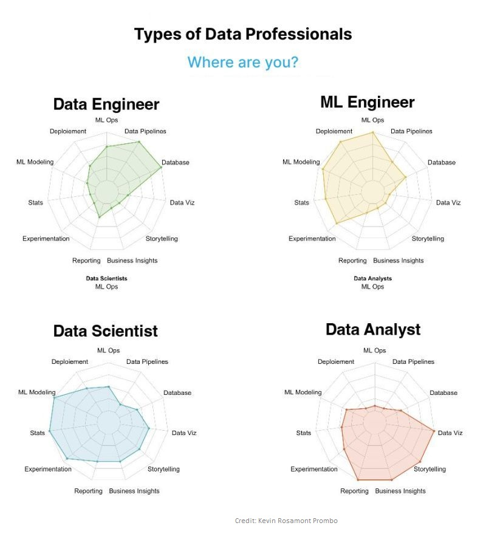
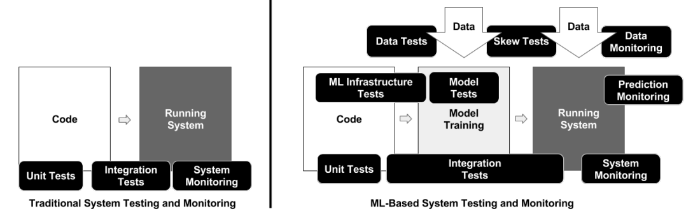
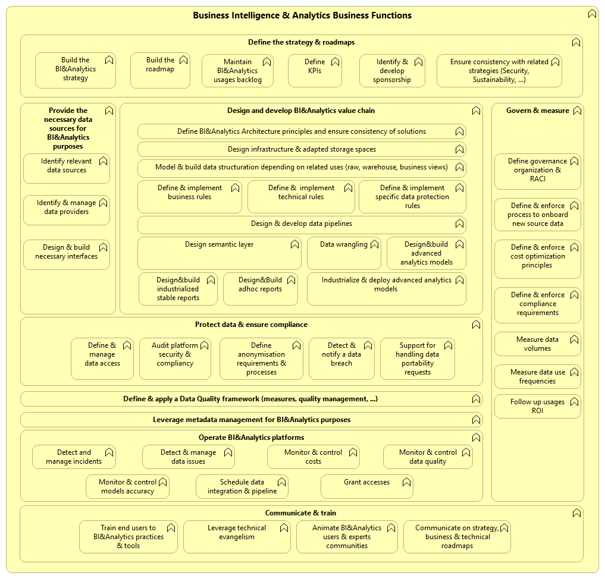
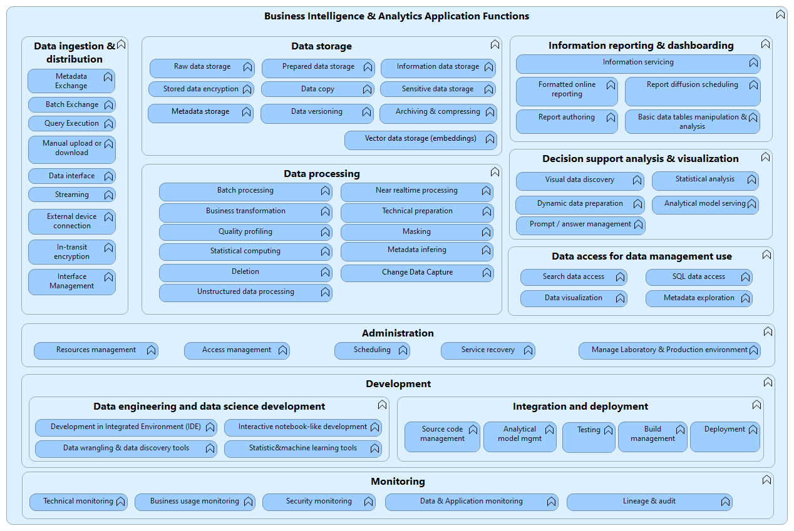

AXA Group Data Management Team, JULY, 2022
THIS DOCUMENT IS UNDER MAINTENANCE, NEW VERSION WILL BE PUBLISHED IN 2024 (DATA MESH, AI).
PREVIOUS REFERENCE DOCUMENT IS THE DATA LAKE POSITION PAPER (2015).
Planning, implementation, and control processes to provide decision support data and support knowledge workers engaged in reporting, query, and analysis.
To build and maintain the technical environment and technical and business processes needed to deliver integrated data in support of operational functions, compliance requirements, and business intelligence activities.
To support and enable effective business analysis and decision making by knowledge workers.
Definition (Hans-Peter Luhn - 1958)
Analytics is the ability to apprehend the interrelationships of presented facts in such a way as to guide action towards desired goal.

On a large scale, and with increasingly broad needs (strategic decision support but also increasingly operational support and analytics embedding in operational processes), except for small organizations or with low business complexity, a central team cannot contain all the complexity of the organization (finance, HR, marketing, etc.).
Many issues with integration when managed only by a central team: on the one hand data models of the source systems are often exposed in “raw” format, very technical, that the central teams must understand, with minimal support from the teams in charge of the source systems… on the other the understanding of the business need is difficult without good knowledge of the business domain (or requires very detailed fonctional specificaitons …)…
Added to this the central team must support (adapt, react) to the changes of the data providers and data consumers (e.g., evolution of the schemas of the source system without notification)…
On the other hand, if the knowledge of the business domain is essential (cf. Domain Driven Design), there are still techniques specific to BI & Analytics (dimensional modeling, data versioning, data masking and data security, etc.) that must be known and leveraged by those who develop and operate BI & analytics applications.
Convictions: i) data (products) mesh is a fairly natural evolution here., ii) the impact is above all organizational (who owns data? ho design the interface? who develop and operate the interface?).
Is there some impacts on the processes?: requires data providers to publishing data schemas, define data usage terms and conditions, manage identity of data consumers, data access versioning and life cycle management, etc.
The revolutionary scenario would be to ‘drop’ the central data lake or data warehouse, keeping data on the edge of the business domains (SOA/API logic). Conceptually, it can be consisdered as the ideal model, there are both technical (data access performance, robustness) and financial constraints (deploying the BI & analytics required infrastructure/tools in every domain).
Point of attention:, alternative (other path) sometimes mentioned: data virtualization. Several issues here, reported by AXA entities who have tested it: + Incompatibility with IT modernization: most of the data virtualization tools are still relying on legacy intergration patterns and protocols (not API oriented but ODBC/JDBC), this is an issue as more and more modern we authorize only open protocols and HTTPS access cross networks (montopring, security inspection, decoupling) * Performance problems, relying a lot on “data caching” less powerful than modern database (massively parallel) processing capacities * Lack of support/integration from market BI tools.
Data as a product means applying design thinking to products. Design thinking is a more and more mature practice, several artifacts can support this activity, for exemple product vision, description of personas, features positioning in journeys ; cf. Martin Fowler - Lean Inception.
Other examples of product design: Microsoft Cosmic Drawings, Silicon Valley Product Group - Examples.
| Name | Core Data Product | Analytical Data Product |
|---|---|---|
| Purpose | Data access (time to access, effort of access and transformation) | Business impact and time to access for business analysts |
| Main data consumer | Analytics team (Business Data Analyst, Data Scientist, BI and ML Engineer) | Business analyst & operational, business system engineer |
| Valorization | Value from reusability (thanks to consolidation/enrichment & data quality) | Value generated in business process |
| Underlying capability | Data Modeling, Data Quality, Metadata | BI, AI/ML |
| Granularity | Object oriented | Business process oriented |
| Examples | Claim, Contract | Fraud detection, Sales analysis |
| Name | Level | Analytical Data Product |
|---|---|---|
| Domain Ownership | Identified | Ownership is defined |
| Domain Ownership | Offensive | Domain owner has defined the vision on data product |
| Product Management | Customer centricity | Usage is monitored, promotion approach is defined, demands are managed |
| Product Management | Finance and operations | Budget and resources allocation and consumption are under control, service levels are monitored, risk are monitored |
| Data Product Usability | Addressable | Unique ID/URL to locate the data product |
| Data Product Usability | Understandable | Personas have been defined, real users representing personas have tested and their feedbacks have been integrated |
| Data Product Usability | Secure | Data confidentiality access controls and data retention rules are in place |
| Data Product Usability | Valuable | Business value and possible use cases are defined |
| Data Product Usability | Discoverable | Appropriate metadata to easily locate and user the data product |
| Data Product Usability | Truthful (Trustworthy) | Data quality metrics are available for the consumer, there is a business support, Service Level Objectives are defined |
| Data Product Usability | Natively Accessible | Several data product consumption format are available (e.g.; SQL, Spreadsheet, CSV) so personas can use their preferred tool (e.g.; Power BI, Excel, etc.) to consume the data product |
| Data Product Usability | Interoperable | I can integrate the data product within a business operational process without any adaptation required on the data product |
| Data Product Architecture | Implemented as a single autonomous unit | encapsulates the data transformation logic and policies that govern their data (metadata, code, policy, declaration of infrastructure dependencies) |
| Data Product Architecture | Identified and managed at enterprise level | recognized and governed at enterprise level |
AXA Tech & Data Strategy for Support & Control Functions has identified in 2024 a first list of potential data products.
Data Product Owner is in charge of the design, the quality, the support, etc.
Data Owner is the person who is ultimately accountable for the data content.
Machine learning testing is more complex than traditional system testing and monitoring.

Source: the ML Test Score: A Rubric for ML Production Readiness and Technical Debt Reduction.


…
| Name | Data Catalog | Data sharing |
|---|---|---|
| Business purpose | Discovery and governance | Data sharing |
| Target users | Data analysts, stewards, developers | Anyone |
| Content | Data assets | Data products |
| Content manager | Data curator | Data product manager |
| User scope | Internal | Internal and external |
| Data access | Upon request | Predefined |
| Metadata | Business and technical | Business, technical, terms of usage, terms of service |
| Data delivery | None | One-time or subscription |
| Data functions | None | Built-in |
| Use cases | Self-service, lineage, impact analysis, glossary, privacy, security, data migration, curation, documentation | Collaboration, product management, partnering, analysis, modeling, chargebacks, monetization |
Source: Wayne Eckerson (Data & analytics thought leader and consultant).
Engagement layer
Data aggregator
Federated analytics
Migration, acquisition (abstraction layer)
Requires all historical data to stay in the source system (not usually the case for operational/OLTP systems)
Tight coupling with the source system (data model)
Network dependancy (latency, failures)
Uses more computing power for intensive and repeatable queries as most transformations are performed in real-time
Consuming BI tools (e.g.; Power BI) have their own virtualization layer and are not optimized to leverage an external solution
AXA Germany, 2024: > when architecting our Smart Data Platform we have chosen to introduce Denodo as a transition technology for accelerating integration of new sources to platform and speeding up/onboarding business. In that sense it helped a lot, e.g. with virtualization feature we were able to quickly develop and provide solution for a financial reporting use-case without having finalized Platform Detailed Design and established Snowflake as persistent data store that time. Features like Denodo API, File Provisioning to AWS S3 etc. also helped us to quickly establishing a “single point of connection” to data-consumers and with big bunches of Connectors we also did benefit from Data Federation by connecting some of our legacy-Marts as sources to support transition. Having the road to the platform constructed with multiple technical ingestion interfaces, the majority of sources is attached and Snowflake is established as core persistent layer, the benefits are not any longer that way as in the beginning. Furthermore, we also touched limits in terms of performance/latency (it’s a data-layer in-between application and Database), so in consequence it was decided to save the money/not prolong the Denodo contract and continue with Snowflake as the “one and only heart” of the Platform. Personally I think for some specific features (e.g. Federation, easy-to-use interface of non-IT/business-people) we still could benefit from it, but finally (lack of-)performance- and cost-arguments led to not continuing with it.
AXA France, 2024: > Axa France’s context situation is very similar to the one described by AXA Germany : just replace “SnowFlake” by “Axa France Big Data Platform”, and you will have an overview of the reason why we have decided to deploy Denodo. Denodo is seen as a transition solution, time for us to reach our objective 100% of our BI / Analytics uses cases supported by our Big Data Platform (Azure DataLake, Azure DataBricks). Like Axa Germany (and I guess like many Axa entities), we still have massive legacy data platforms (SQL Server & Oracle “business oriented” DataWareHouses, huge WPS infocenter platform) used by thousands of end users, and we have to deal with this landscape for at least 3 to 5 years … We have also seen that Denodo could bring us some other benefits, like anonymization on the fly (for managing access to sensitive data) or “live access” to business repositories (XLS, CSV) maintained by end users on our “collaborative spaces” (aka Sharepoint Online).
….
https://mattturck.com/data2021/
24 December 2022: Published